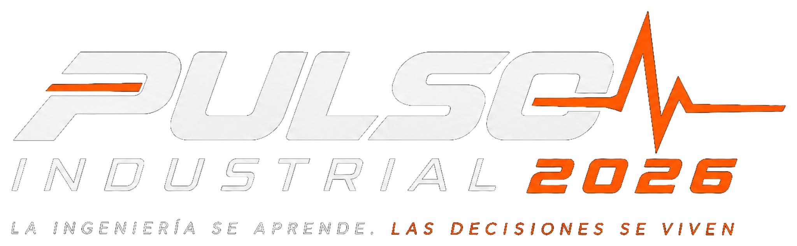

INVITACIÓN INSTITUCIONAL · ACCESO PERSONALIZADO

INVITACIÓN INSTITUCIONAL · ACCESO PERSONALIZADO
PULSO // INVITED · INVITACIÓN ESPECIAL
Hay decisiones que definen el rumbo de un estado.
Y decisiones en educación que determinan las oportunidades de toda una generación.
01 // UNA INVITACIÓN DIFERENTE
El Departamento de Ingeniería Industrial del Instituto Tecnológico de Aguascalientes tiene el honor de invitar a la titular del Poder Ejecutivo del Estado de Aguascalientes a conocer y acompañar PULSO INDUSTRIAL 2026, una experiencia académica que acerca a estudiantes, profesionales y líderes a la realidad de las decisiones que transforman a las organizaciones y a nuestra sociedad.
No buscamos solamente escuchar historias de éxito. Queremos que las nuevas generaciones comprendan las decisiones, los retos humanos y la responsabilidad que existe detrás de cada resultado.
02 // ¿QUÉ HACE DIFERENTE A PULSO?
Situaciones inspiradas en decisiones profesionales, con información, restricciones y consecuencias.
Los estudiantes analizan, dialogan, proponen y defienden sus decisiones.
Ingeniería, liderazgo, pensamiento crítico y responsabilidad para afrontar retos reales.
03 // SU PRESENCIA ES UNA SEÑAL
Su presencia como invitada de honor representaría un vínculo significativo entre la educación tecnológica, el desarrollo industrial de Aguascalientes y las oportunidades de las y los futuros ingenieros.
Le extendemos una invitación para acompañarnos en el encuentro y, de acuerdo con su agenda y el protocolo institucional, compartir un mensaje breve de inspiración dirigido a la comunidad estudiantil. La participación específica y el horario se coordinarán con su equipo.
04 // UNA DECISIÓN PARA REFLEXIONAR
Imaginemos una decisión: una institución dispone de recursos limitados y debe elegir cómo preparar a jóvenes para problemas que todavía no existen. ¿Qué criterio debería orientar primero esa decisión?
05 // LA SEÑAL ESTÁ ACTIVA
La coordinación de la invitación, confirmación, agenda y protocolo se realizará por los canales institucionales correspondientes.
SEÑAL ACTIVADA · Gracias por explorar PULSO INVITE 2026. Esta activación es simbólica y no constituye una confirmación de asistencia. El Comité Organizador realizará la coordinación institucional correspondiente.